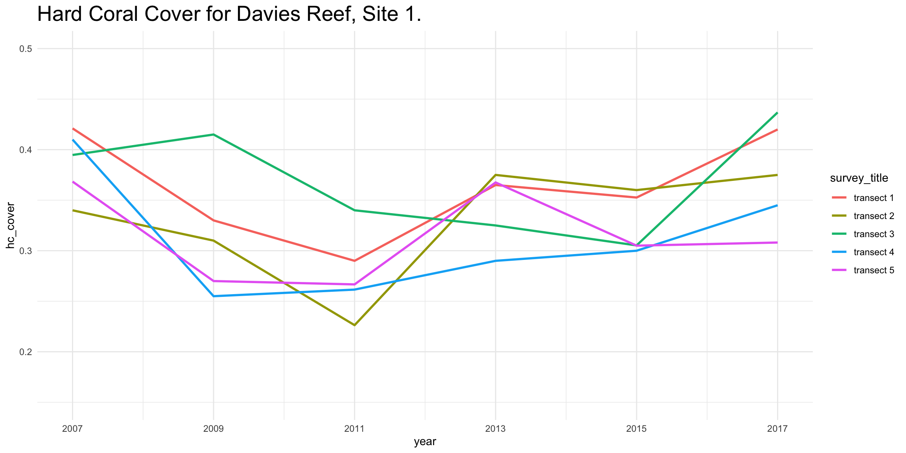
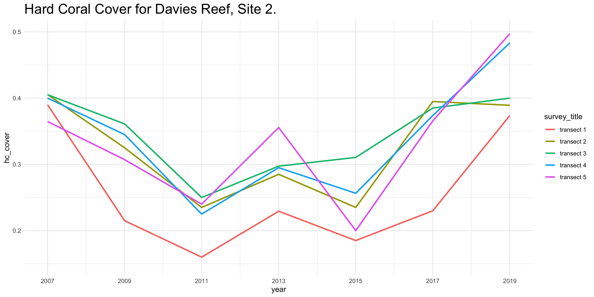
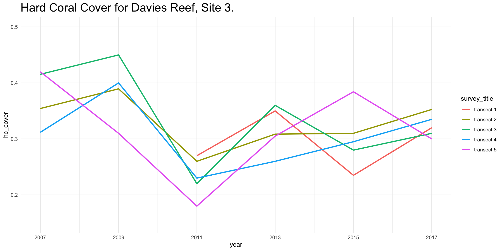
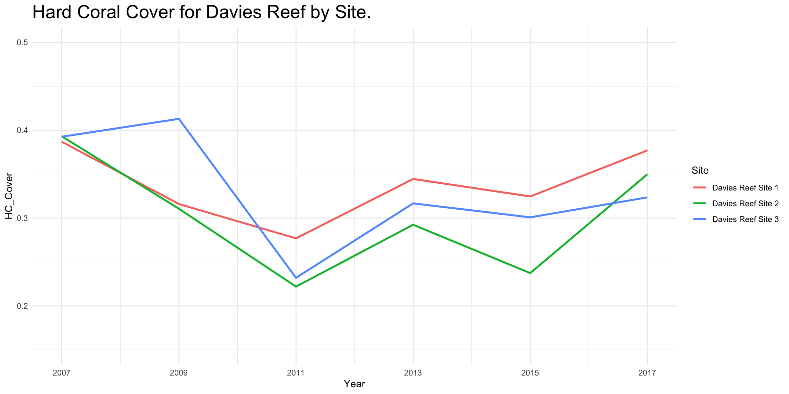
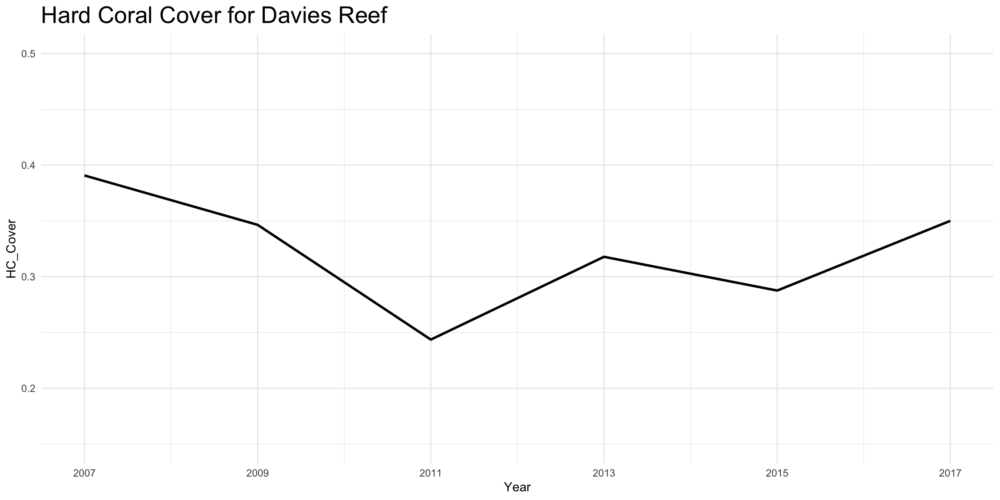

filter_values_get("e791fa0e-053b-4a50-b856-aaa0b88848d7", filter_name = "sites")
## site_id site_name data_years
## 1 1136 Davies Reef Site 1 2005, 2007, 2009, 2011, 2013, 2015, 2017
## 2 1137 Davies Reef Site 2 2005, 2007, 2009, 2011, 2013, 2015, 2017
## 3 1138 Davies Reef Site 3 2005, 2007, 2009, 2011, 2013, 2015, 2017Site1 <- aims_data_get("e791fa0e-053b-4a50-b856-aaa0b88848d7", filters = list("site"="Davies Reef Site 1", "from-date"="2007-01-01","thru-date"="2020-01-01")) Site2 <- aims_data_get("e791fa0e-053b-4a50-b856-aaa0b88848d7", filters = list("site"="Davies Reef Site 2", "from-date"="2007-01-01","thru-date"="2020-01-01")) Site3 <- aims_data_get("e791fa0e-053b-4a50-b856-aaa0b88848d7", filters = list("site"="Davies Reef Site 3", "from-date"="2007-01-01","thru-date"="2020-01-01")) all_sites <- rbind(Site1, Site2, Site3) all_sites
## id site_id site_name survey_id
## 1 10779 1136 Davies Reef Site 1 11802
## 2 10778 1136 Davies Reef Site 1 11801
## 3 10780 1136 Davies Reef Site 1 11803
## 4 10776 1136 Davies Reef Site 1 11799
## 5 10777 1136 Davies Reef Site 1 11800
## 6 10794 1136 Davies Reef Site 1 11817
## 7 10795 1136 Davies Reef Site 1 11818
## 8 10792 1136 Davies Reef Site 1 11815
## 9 10791 1136 Davies Reef Site 1 11814
## 10 10793 1136 Davies Reef Site 1 11816
## 11 10872 1136 Davies Reef Site 1 11890
## 12 10869 1136 Davies Reef Site 1 11887
## 13 10870 1136 Davies Reef Site 1 11888
## 14 10868 1136 Davies Reef Site 1 11886
## 15 10871 1136 Davies Reef Site 1 11889
## 16 10887 1136 Davies Reef Site 1 11935
## 17 10885 1136 Davies Reef Site 1 11933
## 18 10884 1136 Davies Reef Site 1 11932
## 19 10883 1136 Davies Reef Site 1 11931
## 20 10886 1136 Davies Reef Site 1 11934
## 21 10913 1136 Davies Reef Site 1 11961
## 22 10914 1136 Davies Reef Site 1 11962
## 23 10916 1136 Davies Reef Site 1 11964
## 24 10917 1136 Davies Reef Site 1 11965
## 25 10915 1136 Davies Reef Site 1 11963
## 26 10932 1136 Davies Reef Site 1 11979
## 27 10933 1136 Davies Reef Site 1 11980
## 28 10930 1136 Davies Reef Site 1 11977
## 29 10929 1136 Davies Reef Site 1 11976
## 30 10931 1136 Davies Reef Site 1 11978
## 31 10782 1137 Davies Reef Site 2 11805
## 32 10785 1137 Davies Reef Site 2 11808
## 33 10784 1137 Davies Reef Site 2 11807
## 34 10781 1137 Davies Reef Site 2 11804
## 35 10783 1137 Davies Reef Site 2 11806
## 36 10797 1137 Davies Reef Site 2 11820
## 37 10800 1137 Davies Reef Site 2 11823
## 38 10798 1137 Davies Reef Site 2 11821
## 39 10796 1137 Davies Reef Site 2 11819
## 40 10799 1137 Davies Reef Site 2 11822
## 41 10877 1137 Davies Reef Site 2 11895
## 42 10875 1137 Davies Reef Site 2 11893
## 43 10873 1137 Davies Reef Site 2 11891
## 44 10874 1137 Davies Reef Site 2 11892
## 45 10876 1137 Davies Reef Site 2 11894
## 46 10889 1137 Davies Reef Site 2 11937
## 47 10891 1137 Davies Reef Site 2 11939
## 48 10888 1137 Davies Reef Site 2 11936
## 49 10892 1137 Davies Reef Site 2 11940
## 50 10890 1137 Davies Reef Site 2 11938
## 51 10921 1137 Davies Reef Site 2 11969
## 52 10920 1137 Davies Reef Site 2 11968
## 53 10922 1137 Davies Reef Site 2 11970
## 54 10918 1137 Davies Reef Site 2 11966
## 55 10919 1137 Davies Reef Site 2 11967
## 56 10937 1137 Davies Reef Site 2 11984
## 57 10936 1137 Davies Reef Site 2 11983
## 58 10928 1137 Davies Reef Site 2 11985
## 59 10934 1137 Davies Reef Site 2 11981
## 60 10935 1137 Davies Reef Site 2 11982
## 61 10790 1138 Davies Reef Site 3 11813
## 62 10786 1138 Davies Reef Site 3 11809
## 63 10787 1138 Davies Reef Site 3 11810
## 64 10788 1138 Davies Reef Site 3 11811
## 65 10789 1138 Davies Reef Site 3 11812
## 66 10802 1138 Davies Reef Site 3 11825
## 67 10803 1138 Davies Reef Site 3 11826
## 68 10801 1138 Davies Reef Site 3 11824
## 69 10805 1138 Davies Reef Site 3 11828
## 70 10804 1138 Davies Reef Site 3 11827
## 71 10878 1138 Davies Reef Site 3 11896
## 72 10880 1138 Davies Reef Site 3 11898
## 73 10881 1138 Davies Reef Site 3 11899
## 74 10882 1138 Davies Reef Site 3 11900
## 75 10879 1138 Davies Reef Site 3 11897
## 76 10896 1138 Davies Reef Site 3 11944
## 77 10895 1138 Davies Reef Site 3 11943
## 78 10894 1138 Davies Reef Site 3 11942
## 79 10893 1138 Davies Reef Site 3 11941
## 80 10897 1138 Davies Reef Site 3 11945
## 81 10927 1138 Davies Reef Site 3 11975
## 82 10924 1138 Davies Reef Site 3 11972
## 83 10925 1138 Davies Reef Site 3 11973
## 84 10926 1138 Davies Reef Site 3 11974
## 85 10923 1138 Davies Reef Site 3 11971
## 86 10939 1138 Davies Reef Site 3 11987
## 87 10940 1138 Davies Reef Site 3 11988
## 88 10941 1138 Davies Reef Site 3 11989
## 89 10942 1138 Davies Reef Site 3 11990
## 90 10938 1138 Davies Reef Site 3 11986
## survey_title exposure year
## 1 Davies Reef Site 1 transect 4 2007-05-28 Exposed 2007
## 2 Davies Reef Site 1 transect 3 2007-05-28 Exposed 2007
## 3 Davies Reef Site 1 transect 5 2007-05-28 Exposed 2007
## 4 Davies Reef Site 1 transect 1 2007-05-28 Exposed 2007
## 5 Davies Reef Site 1 transect 2 2007-05-28 Exposed 2007
## 6 Davies Reef Site 1 transect 4 2009-04-29 Exposed 2009
## 7 Davies Reef Site 1 transect 5 2009-04-29 Exposed 2009
## 8 Davies Reef Site 1 transect 2 2009-04-29 Exposed 2009
## 9 Davies Reef Site 1 transect 1 2009-04-29 Exposed 2009
## 10 Davies Reef Site 1 transect 3 2009-04-29 Exposed 2009
## 11 Davies Reef Site 1 transect 5 2011-05-05 Exposed 2011
## 12 Davies Reef Site 1 transect 2 2011-05-05 Exposed 2011
## 13 Davies Reef Site 1 transect 3 2011-05-05 Exposed 2011
## 14 Davies Reef Site 1 transect 1 2011-05-05 Exposed 2011
## 15 Davies Reef Site 1 transect 4 2011-05-05 Exposed 2011
## 16 Davies Reef Site 1 transect 5 2013-05-21 Exposed 2013
## 17 Davies Reef Site 1 transect 3 2013-05-21 Exposed 2013
## 18 Davies Reef Site 1 transect 2 2013-05-21 Exposed 2013
## 19 Davies Reef Site 1 transect 1 2013-05-21 Exposed 2013
## 20 Davies Reef Site 1 transect 4 2013-05-21 Exposed 2013
## 21 Davies Reef Site 1 transect 1 2015-05-02 Exposed 2015
## 22 Davies Reef Site 1 transect 2 2015-05-02 Exposed 2015
## 23 Davies Reef Site 1 transect 4 2015-05-02 Exposed 2015
## 24 Davies Reef Site 1 transect 5 2015-05-02 Exposed 2015
## 25 Davies Reef Site 1 transect 3 2015-05-02 Exposed 2015
## 26 Davies Reef Site 1 transect 4 2017-05-08 Exposed 2017
## 27 Davies Reef Site 1 transect 5 2017-05-08 Exposed 2017
## 28 Davies Reef Site 1 transect 2 2017-05-08 Exposed 2017
## 29 Davies Reef Site 1 transect 1 2017-05-08 Exposed 2017
## 30 Davies Reef Site 1 transect 3 2017-05-08 Exposed 2017
## 31 Davies Reef Site 2 transect 2 2007-05-28 Exposed 2007
## 32 Davies Reef Site 2 transect 5 2007-05-28 Exposed 2007
## 33 Davies Reef Site 2 transect 4 2007-05-28 Exposed 2007
## 34 Davies Reef Site 2 transect 1 2007-05-28 Exposed 2007
## 35 Davies Reef Site 2 transect 3 2007-05-28 Exposed 2007
## 36 Davies Reef Site 2 transect 2 2009-04-29 Exposed 2009
## 37 Davies Reef Site 2 transect 5 2009-04-29 Exposed 2009
## 38 Davies Reef Site 2 transect 3 2009-04-29 Exposed 2009
## 39 Davies Reef Site 2 transect 1 2009-04-29 Exposed 2009
## 40 Davies Reef Site 2 transect 4 2009-04-29 Exposed 2009
## 41 Davies Reef Site 2 transect 5 2011-05-05 Exposed 2011
## 42 Davies Reef Site 2 transect 3 2011-05-05 Exposed 2011
## 43 Davies Reef Site 2 transect 1 2011-05-05 Exposed 2011
## 44 Davies Reef Site 2 transect 2 2011-05-05 Exposed 2011
## 45 Davies Reef Site 2 transect 4 2011-05-05 Exposed 2011
## 46 Davies Reef Site 2 transect 2 2013-05-21 Exposed 2013
## 47 Davies Reef Site 2 transect 4 2013-05-21 Exposed 2013
## 48 Davies Reef Site 2 transect 1 2013-05-21 Exposed 2013
## 49 Davies Reef Site 2 transect 5 2013-05-21 Exposed 2013
## 50 Davies Reef Site 2 transect 3 2013-05-21 Exposed 2013
## 51 Davies Reef Site 2 transect 4 2015-05-02 Exposed 2015
## 52 Davies Reef Site 2 transect 3 2015-05-02 Exposed 2015
## 53 Davies Reef Site 2 transect 5 2015-05-02 Exposed 2015
## 54 Davies Reef Site 2 transect 1 2015-05-02 Exposed 2015
## 55 Davies Reef Site 2 transect 2 2015-05-02 Exposed 2015
## 56 Davies Reef Site 2 transect 4 2017-05-08 Exposed 2017
## 57 Davies Reef Site 2 transect 3 2017-05-08 Exposed 2017
## 58 Davies Reef Site 2 transect 5 2017-05-08 Exposed 2017
## 59 Davies Reef Site 2 transect 1 2017-05-08 Exposed 2017
## 60 Davies Reef Site 2 transect 2 2017-05-08 Exposed 2017
## 61 Davies Reef Site 3 transect 5 2007-05-29 Exposed 2007
## 62 Davies Reef Site 3 transect 1 2007-05-29 Exposed 2007
## 63 Davies Reef Site 3 transect 2 2007-05-29 Exposed 2007
## 64 Davies Reef Site 3 transect 3 2007-05-29 Exposed 2007
## 65 Davies Reef Site 3 transect 4 2007-05-29 Exposed 2007
## 66 Davies Reef Site 3 transect 2 2009-04-29 Exposed 2009
## 67 Davies Reef Site 3 transect 3 2009-04-29 Exposed 2009
## 68 Davies Reef Site 3 transect 1 2009-04-29 Exposed 2009
## 69 Davies Reef Site 3 transect 5 2009-04-29 Exposed 2009
## 70 Davies Reef Site 3 transect 4 2009-04-29 Exposed 2009
## 71 Davies Reef Site 3 transect 1 2011-05-05 Exposed 2011
## 72 Davies Reef Site 3 transect 3 2011-05-05 Exposed 2011
## 73 Davies Reef Site 3 transect 4 2011-05-05 Exposed 2011
## 74 Davies Reef Site 3 transect 5 2011-05-05 Exposed 2011
## 75 Davies Reef Site 3 transect 2 2011-05-05 Exposed 2011
## 76 Davies Reef Site 3 transect 4 2013-05-21 Exposed 2013
## 77 Davies Reef Site 3 transect 3 2013-05-21 Exposed 2013
## 78 Davies Reef Site 3 transect 2 2013-05-21 Exposed 2013
## 79 Davies Reef Site 3 transect 1 2013-05-21 Exposed 2013
## 80 Davies Reef Site 3 transect 5 2013-05-21 Exposed 2013
## 81 Davies Reef Site 3 transect 5 2015-05-02 Exposed 2015
## 82 Davies Reef Site 3 transect 2 2015-05-02 Exposed 2015
## 83 Davies Reef Site 3 transect 3 2015-05-02 Exposed 2015
## 84 Davies Reef Site 3 transect 4 2015-05-02 Exposed 2015
## 85 Davies Reef Site 3 transect 1 2015-05-02 Exposed 2015
## 86 Davies Reef Site 3 transect 2 2017-05-08 Exposed 2017
## 87 Davies Reef Site 3 transect 3 2017-05-08 Exposed 2017
## 88 Davies Reef Site 3 transect 4 2017-05-08 Exposed 2017
## 89 Davies Reef Site 3 transect 5 2017-05-08 Exposed 2017
## 90 Davies Reef Site 3 transect 1 2017-05-08 Exposed 2017
## survey_start_date_time hc_cover latitude longitude data
## 1 2007-05-27T14:00:00.000Z 0.4100000 -18.80600 147.6686
## 2 2007-05-27T14:00:00.000Z 0.3947368 -18.80600 147.6686
## 3 2007-05-27T14:00:00.000Z 0.3684211 -18.80600 147.6686
## 4 2007-05-27T14:00:00.000Z 0.4210526 -18.80600 147.6686
## 5 2007-05-27T14:00:00.000Z 0.3400000 -18.80600 147.6686
## 6 2009-04-28T14:00:00.000Z 0.2550000 -18.80600 147.6686
## 7 2009-04-28T14:00:00.000Z 0.2700000 -18.80600 147.6686
## 8 2009-04-28T14:00:00.000Z 0.3100000 -18.80600 147.6686
## 9 2009-04-28T14:00:00.000Z 0.3300000 -18.80600 147.6686
## 10 2009-04-28T14:00:00.000Z 0.4150000 -18.80600 147.6686
## 11 2011-05-04T14:00:00.000Z 0.2666667 -18.80600 147.6686
## 12 2011-05-04T14:00:00.000Z 0.2263158 -18.80600 147.6686
## 13 2011-05-04T14:00:00.000Z 0.3400000 -18.80600 147.6686
## 14 2011-05-04T14:00:00.000Z 0.2900000 -18.80600 147.6686
## 15 2011-05-04T14:00:00.000Z 0.2615385 -18.80600 147.6686
## 16 2013-05-20T14:00:00.000Z 0.3675676 -18.80600 147.6686
## 17 2013-05-20T14:00:00.000Z 0.3250000 -18.80600 147.6686
## 18 2013-05-20T14:00:00.000Z 0.3750000 -18.80600 147.6686
## 19 2013-05-20T14:00:00.000Z 0.3650000 -18.80600 147.6686
## 20 2013-05-20T14:00:00.000Z 0.2900000 -18.80600 147.6686
## 21 2015-05-01T14:00:00.000Z 0.3526316 -18.80600 147.6686
## 22 2015-05-01T14:00:00.000Z 0.3600000 -18.80600 147.6686
## 23 2015-05-01T14:00:00.000Z 0.3000000 -18.80600 147.6686
## 24 2015-05-01T14:00:00.000Z 0.3050000 -18.80600 147.6686
## 25 2015-05-01T14:00:00.000Z 0.3052632 -18.80600 147.6686
## 26 2017-05-07T14:00:00.000Z 0.3450000 -18.80600 147.6686
## 27 2017-05-07T14:00:00.000Z 0.3081081 -18.80600 147.6686
## 28 2017-05-07T14:00:00.000Z 0.3750000 -18.80600 147.6686
## 29 2017-05-07T14:00:00.000Z 0.4200000 -18.80600 147.6686
## 30 2017-05-07T14:00:00.000Z 0.4368421 -18.80600 147.6686
## 31 2007-05-27T14:00:00.000Z 0.4054054 -18.81132 147.6705
## 32 2007-05-27T14:00:00.000Z 0.3647059 -18.81132 147.6705
## 33 2007-05-27T14:00:00.000Z 0.4000000 -18.81132 147.6705
## 34 2007-05-27T14:00:00.000Z 0.3900000 -18.81132 147.6705
## 35 2007-05-27T14:00:00.000Z 0.4051282 -18.81132 147.6705
## 36 2009-04-28T14:00:00.000Z 0.3250000 -18.81132 147.6705
## 37 2009-04-28T14:00:00.000Z 0.3071429 -18.81132 147.6705
## 38 2009-04-28T14:00:00.000Z 0.3611111 -18.81132 147.6705
## 39 2009-04-28T14:00:00.000Z 0.2150000 -18.81132 147.6705
## 40 2009-04-28T14:00:00.000Z 0.3450000 -18.81132 147.6705
## 41 2011-05-04T14:00:00.000Z 0.2400000 -18.81132 147.6705
## 42 2011-05-04T14:00:00.000Z 0.2500000 -18.81132 147.6705
## 43 2011-05-04T14:00:00.000Z 0.1600000 -18.81132 147.6705
## 44 2011-05-04T14:00:00.000Z 0.2350000 -18.81132 147.6705
## 45 2011-05-04T14:00:00.000Z 0.2250000 -18.81132 147.6705
## 46 2013-05-20T14:00:00.000Z 0.2850000 -18.81132 147.6705
## 47 2013-05-20T14:00:00.000Z 0.2950000 -18.81132 147.6705
## 48 2013-05-20T14:00:00.000Z 0.2292683 -18.81132 147.6705
## 49 2013-05-20T14:00:00.000Z 0.3555556 -18.81132 147.6705
## 50 2013-05-20T14:00:00.000Z 0.2972973 -18.81132 147.6705
## 51 2015-05-01T14:00:00.000Z 0.2564103 -18.81132 147.6705
## 52 2015-05-01T14:00:00.000Z 0.3105263 -18.81132 147.6705
## 53 2015-05-01T14:00:00.000Z 0.2000000 -18.81132 147.6705
## 54 2015-05-01T14:00:00.000Z 0.1850000 -18.81132 147.6705
## 55 2015-05-01T14:00:00.000Z 0.2350000 -18.81132 147.6705
## 56 2017-05-07T14:00:00.000Z 0.3736842 -18.81132 147.6705
## 57 2017-05-07T14:00:00.000Z 0.3850000 -18.81132 147.6705
## 58 2017-05-07T14:00:00.000Z 0.3657143 -18.81132 147.6705
## 59 2017-05-07T14:00:00.000Z 0.2300000 -18.81132 147.6705
## 60 2017-05-07T14:00:00.000Z 0.3948718 -18.81132 147.6705
## 61 2007-05-28T14:00:00.000Z 0.4200000 -18.81732 147.6662
## 62 2007-05-28T14:00:00.000Z 0.4611111 -18.81732 147.6662
## 63 2007-05-28T14:00:00.000Z 0.3542857 -18.81732 147.6662
## 64 2007-05-28T14:00:00.000Z 0.4153846 -18.81732 147.6662
## 65 2007-05-28T14:00:00.000Z 0.3117647 -18.81732 147.6662
## 66 2009-04-28T14:00:00.000Z 0.3894737 -18.81732 147.6662
## 67 2009-04-28T14:00:00.000Z 0.4500000 -18.81732 147.6662
## 68 2009-04-28T14:00:00.000Z 0.5150000 -18.81732 147.6662
## 69 2009-04-28T14:00:00.000Z 0.3100000 -18.81732 147.6662
## 70 2009-04-28T14:00:00.000Z 0.4000000 -18.81732 147.6662
## 71 2011-05-04T14:00:00.000Z 0.2700000 -18.81732 147.6662
## 72 2011-05-04T14:00:00.000Z 0.2200000 -18.81732 147.6662
## 73 2011-05-04T14:00:00.000Z 0.2300000 -18.81732 147.6662
## 74 2011-05-04T14:00:00.000Z 0.1800000 -18.81732 147.6662
## 75 2011-05-04T14:00:00.000Z 0.2600000 -18.81732 147.6662
## 76 2013-05-20T14:00:00.000Z 0.2600000 -18.81732 147.6662
## 77 2013-05-20T14:00:00.000Z 0.3600000 -18.81732 147.6662
## 78 2013-05-20T14:00:00.000Z 0.3085714 -18.81732 147.6662
## 79 2013-05-20T14:00:00.000Z 0.3500000 -18.81732 147.6662
## 80 2013-05-20T14:00:00.000Z 0.3050000 -18.81732 147.6662
## 81 2015-05-01T14:00:00.000Z 0.3842105 -18.81732 147.6662
## 82 2015-05-01T14:00:00.000Z 0.3100000 -18.81732 147.6662
## 83 2015-05-01T14:00:00.000Z 0.2800000 -18.81732 147.6662
## 84 2015-05-01T14:00:00.000Z 0.2950000 -18.81732 147.6662
## 85 2015-05-01T14:00:00.000Z 0.2350000 -18.81732 147.6662
## 86 2017-05-07T14:00:00.000Z 0.3526316 -18.81732 147.6662
## 87 2017-05-07T14:00:00.000Z 0.3100000 -18.81732 147.6662
## 88 2017-05-07T14:00:00.000Z 0.3350000 -18.81732 147.6662
## 89 2017-05-07T14:00:00.000Z 0.3000000 -18.81732 147.6662
## 90 2017-05-07T14:00:00.000Z 0.3200000 -18.81732 147.6662all_sites <- transform(all_sites, hc_cover = as.numeric(hc_cover)) all_sites <- transform(all_sites, year = as.numeric(year)) all_sites$survey_title <- substr(all_sites$survey_title, 20, 29)
site_1 <- all_sites %>% filter(site_name == "Davies Reef Site 1") g1<-ggplot(site_1, aes(x = year, y = hc_cover)) + geom_line(aes(color = survey_title), size = 1) + theme_minimal() g1<-g1+labs(title='Hard Coral Cover for Davies Reef, Site 1.') g1<-g1+theme(plot.title = element_text(size=20)) g1<-g1+scale_x_continuous(breaks=c(2007,2009,2011,2013,2015,2017,2019)) g1<-g1+scale_y_continuous(breaks=c(0.0,0.05,0.10,0.15,0.20,0.25,0.30,0.35,0.40,0.45,0.50,0.55,0.60,0.65)) g1<-g1+ylim(0.15,0.5) g1

site_2 <- all_sites %>% filter(site_name == "Davies Reef Site 2") g2<-ggplot(site_2, aes(x = year, y = hc_cover)) + geom_line(aes(color = survey_title), size = 1) + theme_minimal() g2<-g2+labs(title='Hard Coral Cover for Davies Reef, Site 2.') g2<-g2+theme(plot.title = element_text(size=20)) g2<-g2+scale_x_continuous(breaks=c(2007,2009,2011,2013,2015,2017,2019)) g2<-g2+scale_y_continuous(breaks=c(0.0,0.05,0.10,0.15,0.20,0.25,0.30,0.35,0.40,0.45,0.50,0.55,0.60,0.65)) g2<-g2+ylim(0.15,0.5) g2

site_3 <- all_sites %>% filter(site_name == "Davies Reef Site 3") g3<-ggplot(site_3, aes(x = year, y = hc_cover)) + geom_line(aes(color = survey_title), size = 1) + theme_minimal() g3<-g3+labs(title='Hard Coral Cover for Davies Reef, Site 3.') g3<-g3+theme(plot.title = element_text(size=20)) g3<-g3+scale_x_continuous(breaks=c(2007,2009,2011,2013,2015,2017,2019)) g3<-g3+scale_y_continuous(breaks=c(0.0,0.05,0.10,0.15,0.20,0.25,0.30,0.35,0.40,0.45,0.50,0.55,0.60,0.65)) g3<-g3+ylim(0.15,0.5) g3

hcc_by_site <- aggregate(all_sites[, 9], list(all_sites$site_name, all_sites$year), mean, na.rm=TRUE) names(hcc_by_site)[names(hcc_by_site) == "Group.1"] <- "Site" names(hcc_by_site)[names(hcc_by_site) == "Group.2"] <- "Year" names(hcc_by_site)[names(hcc_by_site) == "x"] <- "HC_Cover" hcc_by_site
## Site Year HC_Cover
## 1 Davies Reef Site 1 2007 0.3868421
## 2 Davies Reef Site 2 2007 0.3930479
## 3 Davies Reef Site 3 2007 0.3925092
## 4 Davies Reef Site 1 2009 0.3160000
## 5 Davies Reef Site 2 2009 0.3106508
## 6 Davies Reef Site 3 2009 0.4128947
## 7 Davies Reef Site 1 2011 0.2769042
## 8 Davies Reef Site 2 2011 0.2220000
## 9 Davies Reef Site 3 2011 0.2320000
## 10 Davies Reef Site 1 2013 0.3445135
## 11 Davies Reef Site 2 2013 0.2924242
## 12 Davies Reef Site 3 2013 0.3167143
## 13 Davies Reef Site 1 2015 0.3245789
## 14 Davies Reef Site 2 2015 0.2373873
## 15 Davies Reef Site 3 2015 0.3008421
## 16 Davies Reef Site 1 2017 0.3769900
## 17 Davies Reef Site 2 2017 0.3498541
## 18 Davies Reef Site 3 2017 0.3235263g4<-ggplot(hcc_by_site, aes(x = Year, y = HC_Cover)) + geom_line(aes(color = Site), size = 1) + theme_minimal() g4<-g4+labs(title='Hard Coral Cover for Davies Reef by Site.') g4<-g4+theme(plot.title = element_text(size=20)) g4<-g4+scale_x_continuous(breaks=c(2007,2009,2011,2013,2015,2017,2019)) g4<-g4+scale_y_continuous(breaks=c(0.0,0.05,0.10,0.15,0.20,0.25,0.30,0.35,0.40,0.45,0.50,0.55,0.60,0.65)) g4<-g4+ylim(0.15,0.5) g4

hcc_by_year <- aggregate(all_sites[, 9], list(all_sites$year), mean, na.rm=TRUE) names(hcc_by_year)[names(hcc_by_year) == "Group.1"] <- "Year" names(hcc_by_year)[names(hcc_by_year) == "x"] <- "HC_Cover" hcc_by_year
## Year HC_Cover
## 1 2007 0.3907997
## 2 2009 0.3465152
## 3 2011 0.2436347
## 4 2013 0.3178840
## 5 2015 0.2876028
## 6 2017 0.3501235g5<-ggplot(hcc_by_year, aes(x = Year, y = HC_Cover)) + geom_line(size = 1) + theme_minimal() g5<-g5+labs(title='Hard Coral Cover for Davies Reef') g5<-g5+theme(plot.title = element_text(size=20)) g5<-g5+scale_x_continuous(breaks=c(2007,2009,2011,2013,2015,2017,2019)) g5<-g5+scale_y_continuous(breaks=c(0.0,0.05,0.10,0.15,0.20,0.25,0.30,0.35,0.40,0.45,0.50,0.55,0.60,0.65)) g5<-g5+ylim(0.15,0.5) g5
